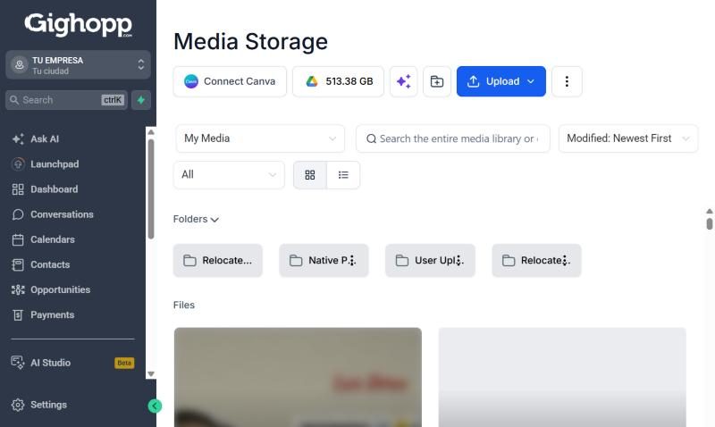
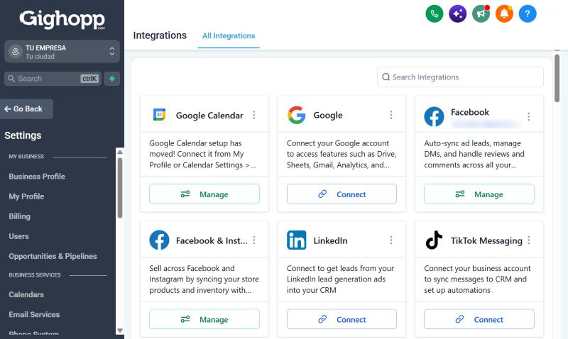
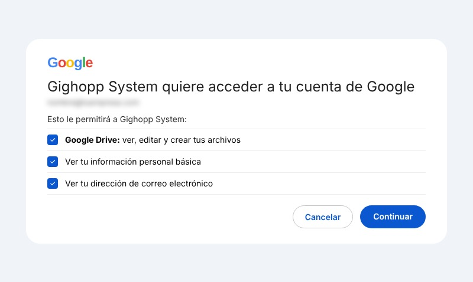
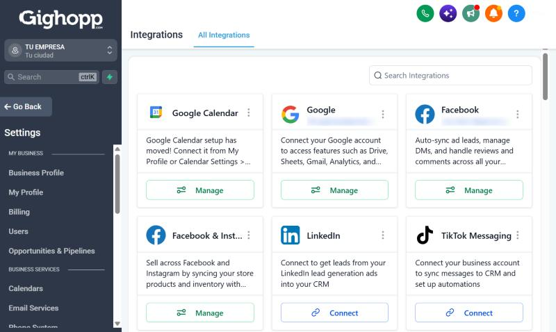

1
Entra a Settings e Integrations
Abajo a la izquierda, haz clic en Settings. En el menú, baja y entra en Integrations.

Conecta tu Drive una vez y tendrás tus archivos a la mano dentro de tu CRM. Toma menos de un minuto.
Abre tu Google Drive en el mismo navegador donde usas el Gighopp System y asegúrate de que tu cuenta de Google esté iniciada. Si no estás logueado, el sistema no la va a encontrar.
Abajo a la izquierda, haz clic en Settings. En el menú, baja y entra en Integrations.

Busca la tarjeta de Google y haz clic en Connect. Se abre una ventana de Google: elige la cuenta con la que iniciaste sesión, la de tu Drive.

Acepta los permisos, incluido Google Drive, y haz clic en Continuar.

La tarjeta de Google ya aparece conectada. Para confirmarlo, entra a Media Storage: arriba verás el ícono de Google Drive con tu espacio disponible.
